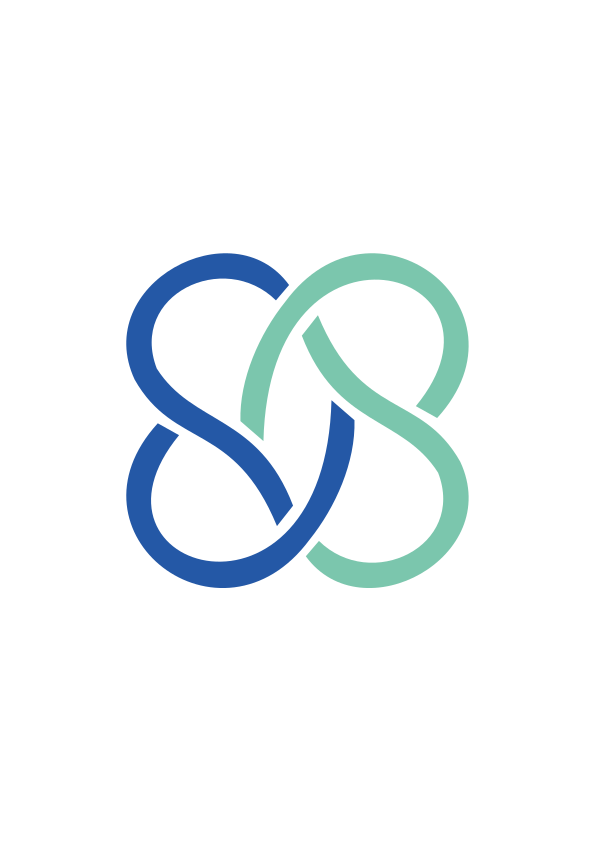

Connecting Lebanese donors with families in need —
transparently and directly.
Every donation goes directly to the family or organisation
All NGOs go through a review process before joining
Track your impact with real-time donation updates
Join 120+ donors making a real difference in Lebanon
300+ families helped · 100% direct impact
Browse campaigns as a guest →About Sawa
Sawa was designed, built, and developed from scratch by Chadi Khoder — a digital platform connecting Lebanese families with donors during the country's ongoing crisis.